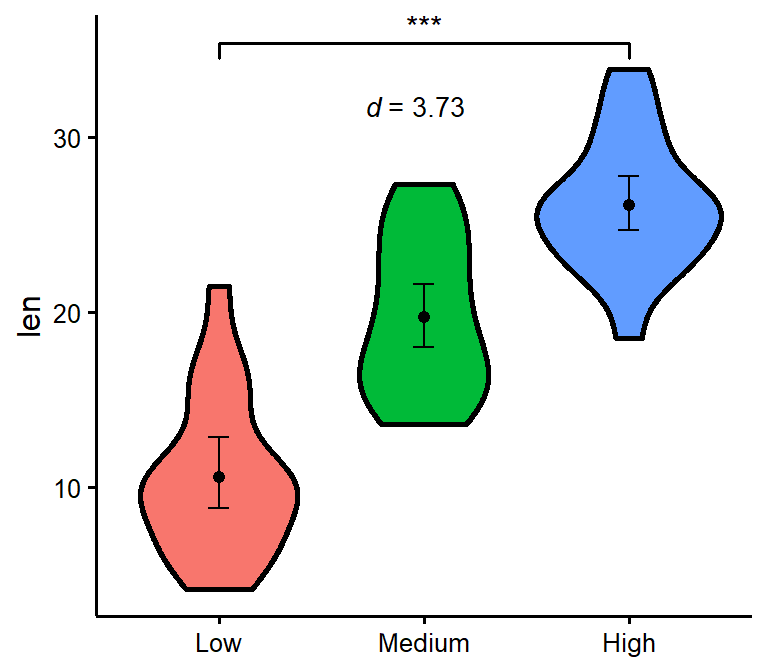
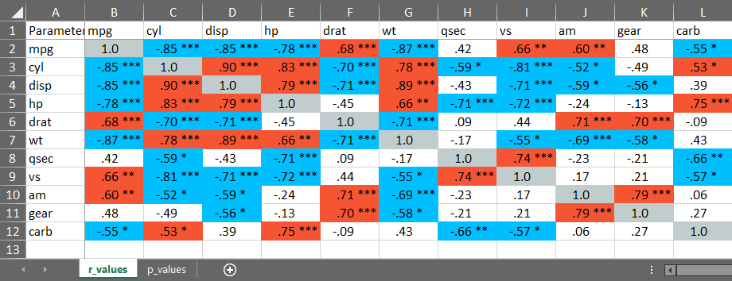
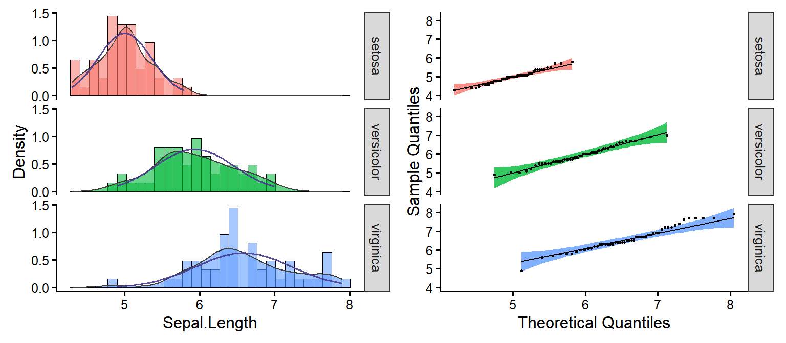
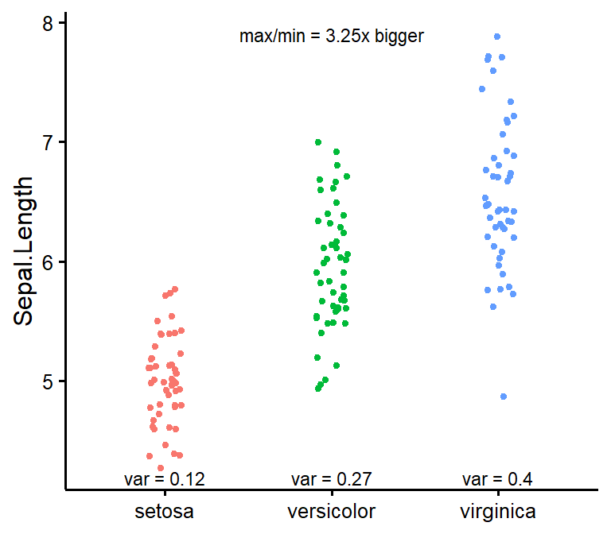

R package of convenience functions to make your workflow faster and easier. Easily customizable plots (via ggplot2), nice APA tables exportable to Word (via flextable), easily run statistical tests or check assumptions, and automatize various other tasks. Mostly geared at researchers in the psychological sciences. The package is still under active development. Feel free to open an issue to ask for help, report a bug, or request a feature.
Installation
You can install the development version (the only version currently available) of the rempsyc package from GitHub with:
# If devtools isn't already installed, install it with install.packages("devtools")
devtools::install_github("rempsyc/rempsyc")You can load the package and open the help file, and click “Index” at the bottom. You will see all the available functions listed.
nice_table
Make nice APA tables easily through a wrapper around the flextable package with sensical defaults and automatic formatting features.
The tables can be saved with the save_as_docx function, and are flextable objects, and can be modified as such. The function also integrates with objects from the broom and report packages. Full tutorial: https://rempsyc.remi-theriault.com/articles/table
Note: For a smoother and more integrated presentation flow, this function is now featured along the other functions.
nice_t_test
Easily compute t-test analyses, with effect sizes, and format in publication-ready format. Supports multiple dependent variables at once. The 95% confidence interval is for the effect size (Cohen’s d).
library(rempsyc)
nice_t_test(data = mtcars,
response = c("mpg", "disp", "drat", "wt"),
group = "am") -> t.tests
#> Using Welch t-test (base R's default; cf. https://doi.org/10.5334/irsp.82).
#> For the Student t-test, use `var.equal = TRUE`.
#>
#>
t.tests
#> Dependent Variable t df p d CI_lower
#> 1 mpg -3.767123 18.33225 0.001373638333 -1.477947 -2.2659731
#> 2 disp 4.197727 29.25845 0.000230041299 1.445221 0.6417834
#> 3 drat -5.646088 27.19780 0.000005266742 -2.003084 -2.8592770
#> 4 wt 5.493905 29.23352 0.000006272020 1.892406 1.0300224
#> CI_upper
#> 1 -0.6705686
#> 2 2.2295592
#> 3 -1.1245498
#> 4 2.7329218
# Format t-test results
t_table <- nice_table(t.tests)
t_table
# Save to word
save_as_docx(t_table, path = "D:/R treasures/t_tests.docx")Full tutorial: https://rempsyc.remi-theriault.com/articles/t-test
nice_contrasts
Easily compute regression with planned contrast analyses (pairwise comparisons similar to t-tests but more powerful when more than 2 groups), and format in publication-ready format. Supports multiple dependent variables at once (but supports only three groups for the moment). In this particular case, the confidence intervals are bootstraped around the Robust Cohen’s d.
nice_contrasts(data = mtcars,
response = c("mpg", "disp"),
group = "cyl",
covariates = "hp") -> contrasts
contrasts
#> Dependent Variable Comparison df t p dR
#> 1 mpg 4 - 8 28 3.663188 0.001028617005 3.031774
#> 2 mpg 6 - 8 28 3.640418 0.001092088865 1.245144
#> 3 mpg 4 - 6 28 -4.861413 0.000040511099 1.786630
#> 4 disp 4 - 8 28 1.290359 0.207480642577 -3.467937
#> 5 disp 6 - 8 28 -6.040561 0.000001640986 -2.427185
#> 6 disp 4 - 6 28 -2.703423 0.011534398020 -1.040753
#> CI_lower CI_upper
#> 1 2.0956152 5.6832125
#> 2 0.6905693 2.3735168
#> 3 1.0287572 3.7751685
#> 4 -4.8634553 -2.3980402
#> 5 -3.8319905 -1.5142612
#> 6 -1.8597834 -0.5155134
# Format contrasts results
nice_table(contrasts, highlight = .001)
Full tutorial: https://rempsyc.remi-theriault.com/articles/contrasts
nice_mod
Easily compute moderation analyses, with effect sizes, and format in publication-ready format. Supports multiple dependent variables and covariates at once.
nice_mod(data = mtcars,
response = c("mpg", "disp"),
predictor = "gear",
moderator = "wt") -> moderations
moderations
#> Model Number Dependent Variable Predictor df b t p
#> 1 1 mpg gear 28 5.615951 1.9437108 0.06204275
#> 2 1 mpg wt 28 1.403861 0.4301493 0.67037970
#> 3 1 mpg gear:wt 28 -1.966931 -2.1551077 0.03989970
#> 4 2 disp gear 28 35.797623 0.6121820 0.54535707
#> 5 2 disp wt 28 160.930043 2.4364098 0.02144867
#> 6 2 disp gear:wt 28 -15.037022 -0.8140664 0.42247646
#> sr2
#> 1 0.028488305
#> 2 0.001395217
#> 3 0.035022025
#> 4 0.002737218
#> 5 0.043355972
#> 6 0.004840251
# Format moderation results
nice_table(moderations, highlight = TRUE)
Full tutorial: https://rempsyc.remi-theriault.com/articles/moderation
nice_lm
For more complicated models not supported by nice_mod, one can define the model in the traditional way and feed it to nice_lm instead. Supports multiple lm models as well.
model1 <- lm(mpg ~ cyl + wt * hp, mtcars)
model2 <- lm(qsec ~ disp + drat * carb, mtcars)
nice_lm(list(model1, model2))
#> Model Number Dependent Variable Predictor df b t
#> 1 1 mpg cyl 27 -0.365239089 -0.7180977
#> 2 1 mpg wt 27 -7.627489287 -5.0146028
#> 3 1 mpg hp 27 -0.108394273 -3.6404181
#> 4 1 mpg wt:hp 27 0.025836594 3.2329593
#> 5 2 qsec disp 27 -0.006222635 -1.9746464
#> 6 2 qsec drat 27 0.227692395 0.1968842
#> 7 2 qsec carb 27 1.154106215 0.7179431
#> 8 2 qsec drat:carb 27 -0.477539959 -1.0825727
#> p sr2
#> 1 0.47886516037 0.0021596150
#> 2 0.00002928375 0.1053130854
#> 3 0.00113640283 0.0555024045
#> 4 0.00322175341 0.0437733438
#> 5 0.05861684483 0.0702566891
#> 6 0.84539274511 0.0006984424
#> 7 0.47895897531 0.0092872897
#> 8 0.28857203297 0.0211165564Full tutorial: https://rempsyc.remi-theriault.com/articles/moderation
nice_slopes
Easily compute simple slopes in moderation analysis, with effect sizes, and format in publication-ready format. Supports multiple dependent variables and covariates at once.
nice_slopes(data = mtcars,
response = c("mpg", "disp"),
predictor = "gear",
moderator = "wt") -> simple.slopes
simple.slopes
#> Model Number Dependent Variable Predictor (+/-1 SD) df b t
#> 1 1 mpg gear (LOW-wt) 28 7.540509 2.0106560
#> 2 1 mpg gear (MEAN-wt) 28 5.615951 1.9437108
#> 3 1 mpg gear (HIGH-wt) 28 3.691393 1.7955678
#> 4 2 disp gear (LOW-wt) 28 50.510710 0.6654856
#> 5 2 disp gear (MEAN-wt) 28 35.797623 0.6121820
#> 6 2 disp gear (HIGH-wt) 28 21.084536 0.5067498
#> p sr2
#> 1 0.05408136 0.030484485
#> 2 0.06204275 0.028488305
#> 3 0.08336403 0.024311231
#> 4 0.51118526 0.003234637
#> 5 0.54535707 0.002737218
#> 6 0.61629796 0.001875579
# Format simple slopes results1
nice_table(simple.slopes)
Full tutorial: https://rempsyc.remi-theriault.com/articles/moderation
nice_lm_slopes
For more complicated models not supported by nice_slopes, one can define the model in the traditional way and feed it to nice_lm_slopes instead. Supports multiple lm models as well, but the predictor and moderator need to be the same for these models (the dependent variable can change).
model1 <- lm(mpg ~ gear * wt, mtcars)
model2 <- lm(disp ~ gear * wt, mtcars)
my.models <- list(model1, model2)
nice_lm_slopes(my.models, predictor = "gear", moderator = "wt")
#> Model Number Dependent Variable Predictor (+/-1 SD) df b t
#> 1 1 mpg gear (LOW-wt) 28 7.540509 2.0106560
#> 2 1 mpg gear (MEAN-wt) 28 5.615951 1.9437108
#> 3 1 mpg gear (HIGH-wt) 28 3.691393 1.7955678
#> 4 2 disp gear (LOW-wt) 28 50.510710 0.6654856
#> 5 2 disp gear (MEAN-wt) 28 35.797623 0.6121820
#> 6 2 disp gear (HIGH-wt) 28 21.084536 0.5067498
#> p sr2
#> 1 0.05408136 0.030484485
#> 2 0.06204275 0.028488305
#> 3 0.08336403 0.024311231
#> 4 0.51118526 0.003234637
#> 5 0.54535707 0.002737218
#> 6 0.61629796 0.001875579Full tutorial: https://rempsyc.remi-theriault.com/articles/moderation
Visualization
All plots can be saved with the ggsave() function. They are ggplot2 objects so can be modified as such.
nice_violin
Make nice violin plots easily with 95% bootstrapped confidence intervals.
nice_violin(data = ToothGrowth,
group = "dose",
response = "len",
xlabels = c("Low", "Medium", "High"),
comp1 = 1,
comp2 = 3,
has.d = TRUE,
d.y = 30)
# Save plot
ggsave('niceplot.pdf', width = 7, height = 7, unit = 'in',
dpi = 300, path = "D:/R treasures/")Full tutorial: https://rempsyc.remi-theriault.com/articles/violin
nice_scatter
Make nice scatter plots easily.
nice_scatter(data = mtcars,
predictor = "wt",
response = "mpg",
has.confband = TRUE,
has.r = TRUE,
has.p = TRUE)
nice_scatter(data = mtcars,
predictor = "wt",
response = "mpg",
group = "cyl",
has.confband = TRUE)
Full tutorial: https://rempsyc.remi-theriault.com/articles/scatter
overlap_circle
Interpolating the Inclusion of the Other in the Self Scale (self-other merging) easily.
# Score of 3.5 (25% overlap)
overlap_circle(3.5)
# Score of 6.84 (81.8% overlap)
overlap_circle(6.84)
Full tutorial: https://rempsyc.remi-theriault.com/articles/circles
cormatrix_excel
Easily output a correlation matrix and export it to Microsoft Excel, with the first row and column frozen, and correlation coefficients colour-coded based on their effect size (0.0-0.3: small (no colour); 0.3-0.6: medium (pink); 0.6-1.0: large (red)).
cormatrix_excel(mtcars)
#> mpg cyl disp hp drat wt qsec vs am gear carb
#> mpg 1.00 -0.85 -0.85 -0.78 0.68 -0.87 0.42 0.66 0.60 0.48 -0.55
#> cyl -0.85 1.00 0.90 0.83 -0.70 0.78 -0.59 -0.81 -0.52 -0.49 0.53
#> disp -0.85 0.90 1.00 0.79 -0.71 0.89 -0.43 -0.71 -0.59 -0.56 0.39
#> hp -0.78 0.83 0.79 1.00 -0.45 0.66 -0.71 -0.72 -0.24 -0.13 0.75
#> drat 0.68 -0.70 -0.71 -0.45 1.00 -0.71 0.09 0.44 0.71 0.70 -0.09
#> wt -0.87 0.78 0.89 0.66 -0.71 1.00 -0.17 -0.55 -0.69 -0.58 0.43
#> qsec 0.42 -0.59 -0.43 -0.71 0.09 -0.17 1.00 0.74 -0.23 -0.21 -0.66
#> vs 0.66 -0.81 -0.71 -0.72 0.44 -0.55 0.74 1.00 0.17 0.21 -0.57
#> am 0.60 -0.52 -0.59 -0.24 0.71 -0.69 -0.23 0.17 1.00 0.79 0.06
#> gear 0.48 -0.49 -0.56 -0.13 0.70 -0.58 -0.21 0.21 0.79 1.00 0.27
#> carb -0.55 0.53 0.39 0.75 -0.09 0.43 -0.66 -0.57 0.06 0.27 1.00
#>
#> [Correlation matrix 'mycormatrix.xlsx' has been saved to working directory (or where specified).]
nice_na
Nicely reports NA values according to existing guidelines (i.e, reporting absolute or percentage of item-based missing values, plus each scale’s maximum amount of missing values for a given participant). Accordingly, allows specifying a list of columns representing questionnaire items to produce a questionnaire-based report of missing values.
# Create synthetic data frame for the demonstration
set.seed(50)
df <- data.frame(scale1_Q1 = sample(c(NA, 1:6), replace = TRUE),
scale1_Q2 = sample(c(NA, 1:6), replace = TRUE),
scale1_Q3 = sample(c(NA, 1:6), replace = TRUE),
scale2_Q1 = sample(c(NA, 1:6), replace = TRUE),
scale2_Q2 = sample(c(NA, 1:6), replace = TRUE),
scale2_Q3 = sample(c(NA, 1:6), replace = TRUE),
scale3_Q1 = sample(c(NA, 1:6), replace = TRUE),
scale3_Q2 = sample(c(NA, 1:6), replace = TRUE),
scale3_Q3 = sample(c(NA, 1:6), replace = TRUE))
# Then select your scales by name
nice_na(df, scales = c("scale1", "scale2", "scale3"))
#> var items na cells na_percent na_max na_max_percent
#> 1 scale1_Q1:scale1_Q3 3 0 21 0.00 0 0.00
#> 2 scale2_Q1:scale2_Q3 3 3 21 14.29 1 33.33
#> 3 scale3_Q1:scale3_Q3 3 2 21 9.52 1 33.33
#> 4 Total 9 5 63 7.94 2 22.22
# Or whole dataframe
nice_na(df)
#> var items na cells na_percent na_max na_max_percent
#> 1 scale1_Q1:scale3_Q3 9 5 63 7.94 2 22.22
nice_reverse
Easily recode scores (reverse-score), typically for questionnaire answers.
# Reverse score of 5 with a maximum score of 5
nice_reverse(5, 5)
#> Note: If your scale minimum score is not '1', please specify it in the 'min' argument
#> [1] 1
# Reverse scores with maximum = 4 and minimum = 0
nice_reverse(1:4, 4, min = 0)
#> [1] 3 2 1 0
# Reverse scores with maximum = 3 and minimum = -3
nice_reverse(-3:3, 3, min = -3)
#> [1] 3 2 1 0 -1 -2 -3
format_value
Easily format p or r values. Note: converts to character class for use in figures or manuscripts to accommodate e.g., “< .001”.
nice_randomize
Randomize easily with different designs.
# Specify design, number of conditions, number of participants, and names of conditions:
nice_randomize(design = "between", Ncondition = 4, n = 8,
condition.names = c("BP","CX","PZ","ZL"))
#> id Condition
#> 1 1 ZL
#> 2 2 BP
#> 3 3 PZ
#> 4 4 CX
#> 5 5 CX
#> 6 6 PZ
#> 7 7 BP
#> 8 8 ZL
# Within-Group Design
nice_randomize(design = "within", Ncondition = 3, n = 3,
condition.names = c("SV","AV","ST"))
#> id Condition
#> 1 1 SV
#> 2 1 AV
#> 3 1 ST
#> 4 2 AV
#> 5 2 ST
#> 6 2 SV
#> 7 3 AV
#> 8 3 SV
#> 9 3 STFull tutorial: https://rempsyc.remi-theriault.com/articles/randomize
nice_assumptions
Test linear regression assumptions easily with a nice summary table.
# Create regression model
model <- lm(mpg ~ wt * cyl + gear, data = mtcars)
# View results
View(nice_assumptions(model))
#> Interpretation: (p) values < .05 imply assumptions are not respected. Diagnostic is how many assumptions are not respected for a given model or variable.
Full tutorial: https://rempsyc.remi-theriault.com/articles/assumptions
nice_normality
Easily make nice density and QQ plots per-group.
nice_normality(data = iris,
variable = "Sepal.Length",
group = "Species",
grid = FALSE,
shapiro = TRUE,
histogram = TRUE)
Full tutorial: https://rempsyc.remi-theriault.com/articles/assumptions
nice_var
Obtain variance per group as well as check for the rule of thumb of one group having variance four times bigger than any of the other groups.
nice_var(data = iris,
variable = "Sepal.Length",
group = "Species")
#> # A tibble: 1 × 7
#> # Rowwise:
#> Variable Setosa Versicolor Virginica Variance.ratio Criteria Heteroscedastic
#> <chr> <dbl> <dbl> <dbl> <dbl> <dbl> <lgl>
#> 1 Sepal.Len… 0.124 0.266 0.404 3.3 4 FALSEFull tutorial: https://rempsyc.remi-theriault.com/articles/assumptions
nice_varplot
Attempt to visualize variance per group.
nice_varplot(data = iris,
variable = "Sepal.Length",
group = "Species")
Full tutorial: https://rempsyc.remi-theriault.com/articles/assumptions
Support me and this package
Thank you for your support. You can support me and this package here: https://github.com/sponsors/rempsyc